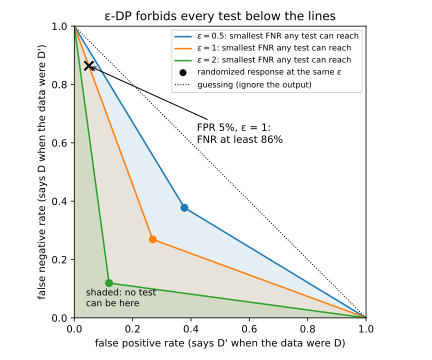
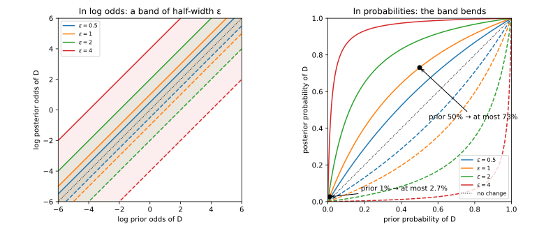
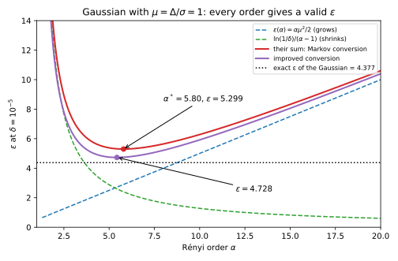
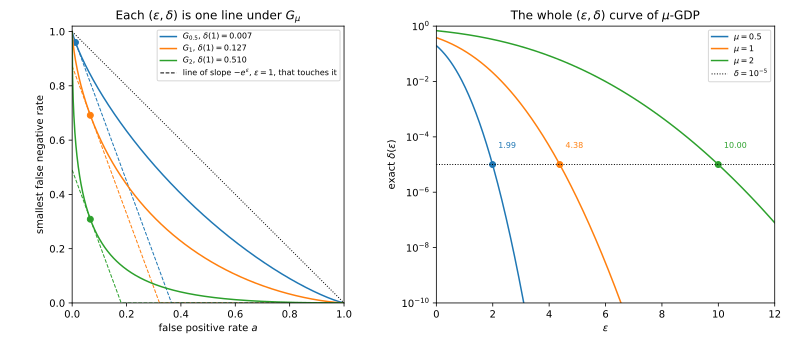

Appendix D — What ε means, and converting between definitions
A mechanism \(M\) is a randomized algorithm: it takes a dataset and returns a random output. Two datasets \(D\) and \(D'\) are neighbours, written \(D \sim D'\), when one is the other with one person’s record added or removed. The definition of privacy has two parameters, a multiplicative limit \(\varepsilon\) and a small additive slack \(\delta\). The mechanism is \((\varepsilon, \delta)\)-differentially private when, for every pair of neighbours and every set \(S\) of outputs, \[\Pr[M(D) \in S] \le e^\varepsilon\,\Pr[M(D') \in S] + \delta. \tag{D.1}\]
Write \(p(y)\) and \(q(y)\) for the probability (or density) of an output \(y\) under \(M(D)\) and \(M(D')\). The privacy loss \(L\) of \(y\) is the log of how much more likely \(y\) is under \(D\) than under \(D'\), \[L(y) = \ln\frac{p(y)}{q(y)}. \tag{D.2}\] Pure differential privacy (DP), the case \(\delta = 0\), is written \(\varepsilon\)-DP, and it is the same as asking that \(|L(y)| \le \varepsilon\) for every output. One direction holds because a single output is itself a set of outputs, and the other because a set’s probability is the sum over its outputs. The absolute value appears because the definition also holds with \(D\) and \(D'\) swapped. Section A.1 builds these definitions slowly, with examples.
This appendix answers two questions. The first two sections say what a number like \(\varepsilon = 1\) promises, as a limit on any test an attacker can run and on an attacker’s belief. The rest say how to report \((\varepsilon, \delta)\) when your accountant, the code that adds up the privacy cost of many releases, tracks something else. Accountants track Rényi differential privacy (RDP), zero-concentrated differential privacy (zCDP) or Gaussian differential privacy (GDP), because those compose more simply. The last three sections convert each of them to \((\varepsilon, \delta)\). Table D.1 lists the five results and the chapter sections that state or use them.
| Section | What it derives | Stated or used in |
|---|---|---|
| Section D.1 | Every test has \(\mathrm{FPR} + e^\varepsilon\,\mathrm{FNR} \ge 1 - \delta\) | Section 18.5, Section 18.6, Section 32.1 |
| Section D.2 | Posterior odds are at most \(e^\varepsilon\) times the prior odds | Section 18.7 |
| Section D.3 | RDP gives \(\varepsilon = \varepsilon(\alpha) + \ln(1/\delta)/(\alpha - 1)\) | Section 29.6, Section 30.1, Section 30.2 |
| Section D.4 | \(\rho\)-zCDP gives \(\varepsilon = \rho + 2\sqrt{\rho\ln(1/\delta)}\) | Section 31.1, Section 31.3 |
| Section D.5 | \(\mu\)-GDP: the curve \(G_\mu\) and its exact \((\varepsilon, \delta)\) | Section 32.2, Section 32.3, Section 32.4, Section 20.4 |
A running example. Most sections below use the Gaussian mechanism, which adds normal noise of standard deviation \(\sigma\) to a query. The query’s sensitivity \(\Delta\) is the most its value can move between neighbours, measured as a Euclidean distance when the query returns a vector.
Dividing the output by \(\sigma\) and subtracting the query’s value on \(D\) changes nothing about privacy, because both steps can be undone. After them, the output on \(D\) is a unit normal centred at 0. For neighbours whose query values are the full sensitivity apart, the output on \(D'\) is a unit normal centred a distance \(\mu = \Delta/\sigma\) away. A smaller shift is harder to detect, so this pair is the worst one (Section D.5 shows why), and the two output distributions are \[P = \mathcal N(0, 1) \text{ on } D, \qquad Q = \mathcal N(\mu, 1) \text{ on } D'. \tag{D.3}\] In the log of the ratio of the two normal densities the \(y^2\) terms cancel, so the privacy loss is a straight line in the output, \[L(y) = -\frac{y^2}{2} + \frac{(y - \mu)^2}{2} = \frac{\mu^2}{2} - \mu y. \tag{D.4}\] When \(y\) is drawn from \(P\), so that \(y\) is standard normal, the loss is a shifted and scaled normal variable, so it is normal with mean \(\mu^2/2\) and variance \(\mu^2\). Throughout, the standard normal distribution function \(\Phi\) gives the probability that a standard normal variable \(Z\) is at most \(x\), \[\Phi(x) = \Pr[Z \le x], \tag{D.5}\] and \(\Phi^{-1}\) is its inverse. Unless a section says otherwise, the numbers use \(\delta = 10^{-5}\), and logarithms are natural.
D.1 What ε means for any test
D.1.1 The question
An attacker sees the output and must guess whether the data were \(D\) or \(D'\), for example whether your record was used. It may know everything else and compute anything. What does \(\varepsilon = 1\) stop it from doing?
D.1.2 The answer
Any guessing rule can be written as a set \(S\) of outputs: the attacker says “\(D'\)” when the output lands in \(S\), and “\(D\)” otherwise. It can be wrong in two ways. Its false positive rate (FPR) is how often it says “\(D'\)” when the data were \(D\), so \(\mathrm{FPR} = \Pr[M(D) \in S]\). Its false negative rate (FNR) is how often it says “\(D\)” when the data were \(D'\), so \(\mathrm{FNR} = \Pr[M(D') \notin S]\). If \(M\) is \((\varepsilon, \delta)\)-DP, then every test, against every pair of neighbours, satisfies both \[\mathrm{FPR} + e^\varepsilon\,\mathrm{FNR} \ge 1 - \delta \qquad\text{and}\qquad e^\varepsilon\,\mathrm{FPR} + \mathrm{FNR} \ge 1 - \delta. \tag{D.6}\] There are two inequalities because the definition holds in both orders of the pair. The chapter on the definition (Section 18.5) writes \(\alpha\) and \(\beta\) for the two error rates, but this page needs \(\alpha\) for a Rényi order.
D.1.3 A worked example
Take \(\varepsilon = 1\) and \(\delta = 0\), and an attacker who accepts 5% false positives. The first inequality says \(0.05 + e\,\mathrm{FNR} \ge 1\), so \(\mathrm{FNR} \ge 0.95/e = 0.3495\). The second says \(e \times 0.05 + \mathrm{FNR} \ge 1\), so \(\mathrm{FNR} \ge 1 - 0.1359 = 0.8641\). Both must hold, so the attacker misses at least 86.4% of the time, and it catches \(D'\) at most 13.6% of the time.
At a low FPR the second inequality does the work. Low FPR is exactly where attackers want to operate, because an attack that rarely raises a false alarm is one whose accusations can be trusted. A coin that says “\(D'\)” 5% of the time, ignoring the output, catches \(D'\) 5% of the time. So \(\varepsilon = 1\) lets the best attacker catch \(D'\) at most \(0.136/0.05 = e \approx 2.7\) times as often as that coin.
With \(\delta = 10^{-5}\) the limit at \(\mathrm{FPR} = 0.05\) drops only to 0.864076, because \(\delta\) lowers each of the two bounds by exactly \(\delta\).
D.1.4 Why it works
Each inequality is the definition applied to one set. The proof also uses one rule twice: the probability that the output is outside \(S\) is one minus the probability that it is inside, so \(\Pr[M(D) \notin S] = 1 - \mathrm{FPR}\) and \(\Pr[M(D') \in S] = 1 - \mathrm{FNR}\).
- The first inequality. Apply the definition to the set of outputs where the test says “\(D\)”, the complement of \(S\). It gives \(\Pr[M(D) \notin S] \le e^\varepsilon\Pr[M(D') \notin S] + \delta\). The left side is \(1 - \mathrm{FPR}\) and the probability on the right is \(\mathrm{FNR}\). So \(1 - \mathrm{FPR} \le e^\varepsilon\,\mathrm{FNR} + \delta\), which rearranges to the first inequality.
- The second inequality. If \(D\) and \(D'\) are neighbours, so are \(D'\) and \(D\), so the definition also holds with the two datasets swapped. Apply it in that order to \(S\) itself: \(\Pr[M(D') \in S] \le e^\varepsilon\Pr[M(D) \in S] + \delta\). The left side is \(1 - \mathrm{FNR}\) and the probability on the right is \(\mathrm{FPR}\), which gives the second inequality.
- Tests that flip a coin. An attacker may also say “\(D'\)” with some probability that depends on the output. Then think of its coin \(U\) as part of the output. Releasing \((M(D), U)\), with \(U\) independent of the data, is still \((\varepsilon, \delta)\)-DP. For each value of \(U\) the inequality holds for the matching slice of the set, and averaging both sides over \(U\) keeps it. So steps 1 and 2 apply to randomized tests too.
A tiny case shows that the bound is reached. In randomized response, one person reports the true bit with probability \(e^\varepsilon/(1 + e^\varepsilon)\) and the flipped bit otherwise. Each report is exactly \(e^\varepsilon\) times as likely under one value of the bit as under the other, so the mechanism is \(\varepsilon\)-DP. Let the bit be 1 under \(D\) and 0 under \(D'\), and let the test say “\(D'\)” when the report is 0. It errs when the report is flipped, in either world, so \(\mathrm{FPR} = \mathrm{FNR} = 1/(1 + e^\varepsilon)\), which is 0.2689 at \(\varepsilon = 1\). Then \[\mathrm{FPR} + e^\varepsilon\,\mathrm{FNR} = \frac{1 + e^\varepsilon}{1 + e^\varepsilon} = 1, \tag{D.7}\] so the first inequality holds with equality, and by symmetry so does the second. Randomized response meets both bounds at once, so neither inequality can be strengthened if it is to hold for every \(\varepsilon\)-DP mechanism.
D.1.5 Checking it
The script for this page (see Section D.7) lists every possible test against three people who each run randomized response with \(\varepsilon = \ln 3\), for neighbours that differ in the first person’s bit. A test is any subset of the 8 report vectors, so there are \(2^8 = 256\) tests. The smallest slack, the amount by which a test clears the tighter of the two inequalities, is exactly 0, so no test breaks the bound and several tests meet it.
In Figure D.1, a smaller \(\varepsilon\) pushes the edge of the forbidden region up towards the diagonal \(\mathrm{FPR} + \mathrm{FNR} = 1\), which is what a test that ignores the output achieves.

D.1.6 Recipe and pitfalls
To turn a guarantee into an attack limit, pick the false positive rate you care about. The attacker’s true positive rate (TPR) is the fraction of the time it correctly says “\(D'\)”, so \(\mathrm{TPR} = 1 - \mathrm{FNR}\), and the second inequality caps it at \[\mathrm{TPR} \le e^\varepsilon\,\mathrm{FPR} + \delta. \tag{D.8}\] Auditing, which tests a privacy claim by attacking the system, runs this in reverse. If an attack measures a TPR and an FPR against a trained model, the mechanism’s \(\varepsilon\) must be at least \(\ln\big((\mathrm{TPR} - \delta)/\mathrm{FPR}\big)\).
Three things go wrong in practice. Most mechanisms sit strictly inside the bound, so a weak attack says little about how private the mechanism really is. At \(\mathrm{FPR} = 0\) the bound still allows a TPR of \(\delta\), so \(\delta\) must be tiny. And a guarantee for neighbours that add or remove one record says less about neighbours that replace one record with another. Section 18.5 proves the converse, that the two inequalities for all tests are the same as \((\varepsilon, \delta)\)-DP, and Section 18.6 turns them into a bound on membership advantage.
D.2 What ε means for an attacker’s belief
D.2.1 The question
People often ask: “after the release, how sure can someone be about my record?” Take the strongest attacker, who knows every record except yours, so it knows the data are one of two neighbours, \(D\) or \(D'\). Before the release it believes \(D\) with some prior probability \(\pi\). How large can its belief be afterwards?
D.2.2 The answer
The odds of \(D\) are its probability divided by the probability of \(D'\), so the prior odds are \(\pi/(1 - \pi)\). If \(M\) is \(\varepsilon\)-DP, then after any output \(y\) the posterior odds are within a factor \(e^\varepsilon\) of the prior odds, and the posterior probability is capped: \[\frac{\Pr[D \mid y]}{\Pr[D' \mid y]} \le e^\varepsilon\,\frac{\pi}{1 - \pi}, \qquad \Pr[D \mid y] \le \frac{e^\varepsilon\pi}{e^\varepsilon\pi + 1 - \pi}. \tag{D.9}\] The same argument with \(e^{-\varepsilon}\) gives the matching lower limits.
D.2.3 A worked example
Take \(\varepsilon = 1\) and a prior of 1%, so the prior odds are \(0.01/0.99 = 0.010101\). The output can multiply them by at most \(e\), which brings them to \(0.027457\). Odds \(o\) turn back into a probability as \(o/(1 + o)\), so the posterior is at most \(0.027457/1.027457 = 0.0267\). In words, a suspicion of 1% can rise to at most 2.7%. With a prior of 50% the prior odds are 1, so the posterior odds are at most \(e\) and the posterior is at most \(e/(1 + e) = 0.7311\), or 73%.
Table D.2 gives the cap for other values. Small priors stay small unless \(\varepsilon\) is large: at \(\varepsilon = 4\) a prior of 1% can rise to 36%.
| \(\varepsilon\) | Prior 0.01 | Prior 0.5 |
|---|---|---|
| 0.5 | 0.0164 | 0.6225 |
| 1 | 0.0267 | 0.7311 |
| 2 | 0.0695 | 0.8808 |
| 4 | 0.3555 | 0.9820 |
D.2.4 Why it works
The argument is Bayes’ rule written in odds. In Table D.3, each row multiplies the prior by the chance of seeing \(y\) under that hypothesis, and the posterior divides each product by their sum \(c\).
| Hypothesis | Prior | Chance of \(y\) | Prior × chance | Posterior |
|---|---|---|---|---|
| \(D\) | \(\pi\) | \(p(y)\) | \(\pi\,p(y)\) | \(\pi\,p(y)/c\) |
| \(D'\) | \(1 - \pi\) | \(q(y)\) | \((1 - \pi)\,q(y)\) | \((1 - \pi)\,q(y)/c\) |
- Divide the two posteriors. The sum \(c\) is the same in both rows, so it cancels in the ratio. What is left is the prior odds times the ratio of the chances, which is \(e^{L(y)}\): \[\frac{\Pr[D \mid y]}{\Pr[D' \mid y]} = \frac{\pi}{1 - \pi}\cdot\frac{p(y)}{q(y)} = \frac{\pi}{1 - \pi}\,e^{L(y)}. \tag{D.10}\]
- Use pure DP. Under \(\varepsilon\)-DP, \(L(y) \le \varepsilon\) for every output, so \(e^{L(y)} \le e^\varepsilon\). This gives the odds bound of Equation D.9.
- Turn odds into a probability. The map \(o \mapsto o/(1 + o)\) grows with \(o\), so the largest odds give the largest probability. Put in \(o = e^\varepsilon\pi/(1 - \pi)\) and multiply top and bottom by \(1 - \pi\) to get the probability bound.
With \(\delta\). Under \((\varepsilon, \delta)\)-DP the privacy loss is not bounded everywhere, so the bound cannot hold for every output. It is tempting to say that it holds except on outputs of total probability \(\delta\), but that is false in general. For example, the Gaussian running example with \(\mu = 1\) is \((4.3772, 10^{-5})\)-DP (Section D.5). Yet, when the data are \(D\), its privacy loss exceeds 4.3772 with probability \(5.284\times10^{-5}\), more than five times \(\delta\).
What does hold is the same bound at a larger level \(\varepsilon' > \varepsilon\), except on a set of outputs whose probability is a small multiple of \(\delta\). To prove it, let \(B\) be the set of outputs whose loss exceeds \(\varepsilon'\), and write \(\Pr_P[B]\) and \(\Pr_Q[B]\) for its probability under \(D\) and \(D'\).
- The definition, applied to \(B\), says \(\Pr_P[B] - e^\varepsilon \Pr_Q[B] \le \delta\).
- On \(B\) each output has \(q(y) < e^{-\varepsilon'}p(y)\), because its loss exceeds \(\varepsilon'\). Adding over \(B\) gives \(\Pr_Q[B] < e^{-\varepsilon'}\Pr_P[B]\).
- Put step 2 into step 1. Replacing \(\Pr_Q[B]\) by the larger \(e^{-\varepsilon'}\Pr_P[B]\) makes the left side smaller, and the left side was already at most \(\delta\). So \(\Pr_P[B]\,(1 - e^{\varepsilon - \varepsilon'}) < \delta\), and therefore \[\Pr_P[B] < \frac{\delta}{1 - e^{\varepsilon - \varepsilon'}}. \tag{D.11}\]
Outside \(B\) the loss is at most \(\varepsilon'\), so steps 1 to 3 of the pure case go through with \(\varepsilon'\) in place of \(\varepsilon\). So the posterior bound holds at level \(\varepsilon'\), except on outputs whose probability under \(D\) is at most \(\delta/(1 - e^{\varepsilon - \varepsilon'})\). With \(\varepsilon' = \varepsilon + 1\) that exception is \(\delta/(1 - e^{-1}) = 1.582\times10^{-5}\). For the Gaussian example the true probability of a loss above \(4.3772 + 1\) is \(5.381\times10^{-7}\), well inside the bound.
D.2.5 Checking it
The script draws 2,000,000 people whose bit is 1 with probability 1% and runs randomized response at \(\varepsilon = 1\), which reports the true bit with probability \(e/(1 + e) = 0.7311\). Among the reports of 1, the fraction that came from a true 1 is 0.0267, the cap of Equation D.9. Randomized response reaches the cap, so the cap cannot be lowered.
Figure D.2 shows the mechanism of the proof. In log odds, the output adds \(L(y)\) to the prior’s log odds, so \(\varepsilon\)-DP keeps the posterior inside a band of half-width \(\varepsilon\) around the diagonal. In probabilities the band bends, because the map from log odds back to a probability squeezes large log odds towards 1 and very negative ones towards 0.

D.2.6 Recipe and pitfalls
To explain \(\varepsilon\) to someone who thinks in probabilities, ask for their prior \(\pi\) and give them the cap \(e^\varepsilon\pi/(e^\varepsilon\pi + 1 - \pi)\). The guarantee limits the change in belief, not the belief itself: an attacker who is already 99% sure stays about that sure. The bound is per person and per release. For correlated records, such as a household, first work out the guarantee for the whole group, and for repeated releases first add up their privacy cost. With \(\delta > 0\), quote the bound at a larger level \(\varepsilon'\) together with the exception of Equation D.11. Section 18.7 states the result and discusses weaker attackers.
D.3 From Rényi DP to (ε, δ)
D.3.1 The question
Your accountant tracks RDP because RDP composes by adding. At the end it hands you a curve, one number for each order \(\alpha\) (defined next), and you must report \((\varepsilon, \delta)\). How do you turn the curve into \(\varepsilon\)?
The Rényi divergence of order \(\alpha > 1\) is a log average of a power of the likelihood ratio \(p/q\). Written with the privacy loss, with \(y\) drawn from \(P = M(D)\), it is \[D_\alpha(P\|Q) = \frac{1}{\alpha - 1}\ln\mathbb E_P\big[e^{(\alpha - 1)L}\big]. \tag{D.12}\] A mechanism has RDP curve \(\varepsilon(\alpha)\) when \(D_\alpha(M(D)\|M(D')) \le \varepsilon(\alpha)\) for every pair of neighbours. Multiplying by \(\alpha - 1\) and exponentiating, this says that \[\mathbb E_P\big[e^{(\alpha - 1)L}\big] \le e^{(\alpha - 1)\varepsilon(\alpha)}. \tag{D.13}\] In words, the curve bounds the moment generating function (MGF) of the privacy loss, the average of \(e^{\lambda L}\), at the point \(\lambda = \alpha - 1\).
D.3.2 The answer
For every order \(\alpha > 1\), a mechanism with RDP curve \(\varepsilon(\alpha)\) is \((\varepsilon, \delta)\)-DP with \[\varepsilon = \varepsilon(\alpha) + \frac{\ln(1/\delta)}{\alpha - 1}. \tag{D.14}\] This is Mironov’s conversion. Every order gives a valid guarantee, so you report the smallest \(\varepsilon\) over the orders you have computed, usually a fixed grid.
D.3.3 A worked example
For the Gaussian running example with \(\mu = \Delta/\sigma = 1\), the curve is \(\varepsilon(\alpha) = \alpha/2\) (step 4 below derives it), and \(\ln(1/\delta) = 11.5129\). At order 2 the conversion gives \(1 + 11.5129 = 12.5129\), while at order 5.8 it gives \(2.9 + 11.5129/4.8 = 5.2985\), which is the best possible (step 5). Yet the exact \(\varepsilon\) of this mechanism at \(\delta = 10^{-5}\) is 4.3772 (Section D.5), so the conversion overstates it by 0.9213.
D.3.4 Why it works
The proof has two moves. Markov’s inequality turns the MGF bound into a bound on the chance that the loss is large, and a loss that is small everywhere except on a rare set gives \((\varepsilon, \delta)\)-DP.
- Markov’s inequality on the loss. Fix a target level \(\varepsilon\). Markov’s inequality says that a quantity \(X\) that is never negative exceeds a level \(t\) with probability at most \(\mathbb E[X]/t\), because those outcomes alone contribute at least \(t\) times their probability to the average. The quantity \(e^{(\alpha - 1)L}\) is never negative, and it exceeds \(e^{(\alpha - 1)\varepsilon}\) exactly when \(L > \varepsilon\), since \(\alpha - 1 > 0\). So, with Equation D.13 in the last step, \[\Pr_P[L > \varepsilon] \le \frac{\mathbb E_P\big[e^{(\alpha - 1)L}\big]}{e^{(\alpha - 1)\varepsilon}} \le e^{(\alpha - 1)(\varepsilon(\alpha) - \varepsilon)}. \tag{D.15}\]
- Solve for \(\varepsilon\). Set the right side equal to \(\delta\) and take logs: \((\alpha - 1)(\varepsilon(\alpha) - \varepsilon) = -\ln(1/\delta)\). Solving for \(\varepsilon\) gives Equation D.14, and at that \(\varepsilon\) the loss exceeds \(\varepsilon\) with probability at most \(\delta\).
- A rare large loss gives \((\varepsilon, \delta)\)-DP. Take any set \(S\) of outputs and split it in two. On the part where \(L \le \varepsilon\), each output has \(p(y) \le e^\varepsilon q(y)\), so that part has \(P\)-probability at most \(e^\varepsilon \Pr_Q[S]\). The other part lies inside the set where \(L > \varepsilon\), which has \(P\)-probability at most \(\delta\) by step 2. Adding the two parts gives \(\Pr_P[S] \le e^\varepsilon \Pr_Q[S] + \delta\). RDP also bounds the divergence with the two datasets swapped, because swapped neighbours are still neighbours, so the same argument gives the other direction. Section A.6 uses the same split to calibrate the Gaussian mechanism. Note that a rare large loss is enough for \((\varepsilon, \delta)\)-DP, but Section D.2 showed that \((\varepsilon, \delta)\)-DP does not force the large loss to be that rare.
A tiny case shows step 3 at work. Take three outputs with probabilities \(p = (0.6, 0.39, 0.01)\) under \(D\) and \(q = (0.6, 0.3999, 0.0001)\) under \(D'\), and \(\varepsilon = 0.1\). Only the third output has a loss above 0.1, namely \(\ln 100 = 4.605\), and its probability under \(D\) is 0.01, so step 3 promises \((0.1, 0.01)\)-DP. Over all 8 sets, the largest value of \(\Pr_P[S] - e^{0.1}\Pr_Q[S]\) is 0.00989, just below the promised 0.01.
- The Gaussian’s curve. Under \(P\) the loss is normal with mean \(\mu^2/2\) and variance \(\mu^2\), so its MGF is that of a normal variable. For a normal variable \(X\) with mean \(m\) and variance \(v\), that MGF is \[\mathbb E[e^{\lambda X}] = e^{\lambda m + \lambda^2v/2}. \tag{D.16}\] So with \(\lambda = \alpha - 1\), \(m = \mu^2/2\) and \(v = \mu^2\), the exponent is \((\alpha - 1)\mu^2/2 + (\alpha - 1)^2\mu^2/2\), which factors as \((\alpha - 1)\,\alpha\mu^2/2\). Dividing by \(\alpha - 1\) then gives \(\varepsilon(\alpha) = \alpha\mu^2/2\), a straight line through the origin. Section B.4 derives it in more detail and shows why curves add under composition.
- The best order. The conversion is \(g(\alpha) = \alpha\mu^2/2 + \ell/(\alpha - 1)\), where \(\ell = \ln(1/\delta)\). The first term grows with the order and the second shrinks, so the best order is in between. The slope is \(g'(\alpha) = \mu^2/2 - \ell/(\alpha - 1)^2\), which is zero when \((\alpha - 1)^2 = 2\ell/\mu^2\). The first term is a straight line and the second curves upward, so their sum curves upward and this point is its minimum: \[\alpha^* = 1 + \frac{\sqrt{2\ell}}{\mu}, \qquad \varepsilon = \frac{\mu^2}{2} + \mu\sqrt{2\ell}. \tag{D.17}\] For the second formula, the first term at \(\alpha^*\) is \(\mu^2/2 + \mu\sqrt{2\ell}/2\), and the second is \(\ell\mu/\sqrt{2\ell} = \mu\sqrt{2\ell}/2\). At \(\mu = 1\), \(\sqrt{2 \times 11.5129} = 4.7985\), so \(\alpha^* = 5.7985\) and \(\varepsilon = 0.5 + 4.7985 = 5.2985\).
The improved conversion. Step 3 is wasteful. The smallest valid \(\delta\) is the largest value of \(\Pr_P[S] - e^\varepsilon \Pr_Q[S]\) over sets \(S\), which comes from the set of outputs with \(L > \varepsilon\). Each such output adds \(p - e^\varepsilon q = p\,(1 - e^{\varepsilon - L})\), so the exact \(\delta\) counts it only in proportion \(1 - e^{\varepsilon - L}\). That proportion is small when \(L\) is just above \(\varepsilon\), but step 3 charges the output in full. The improved conversion (Balle et al. 2020; Canonne, Kamath & Steinke 2020) bounds that proportion by the smallest multiple of \(e^{(\alpha - 1)L}\) that lies above it, whose average Equation D.13 controls. It gives \[\varepsilon = \varepsilon(\alpha) + \ln\frac{\alpha - 1}{\alpha} - \frac{\ln\delta + \ln\alpha}{\alpha - 1}. \tag{D.18}\] Section 30.2 derives it. For the Gaussian with \(\mu = 1\) its best order is 5.43, where it gives 4.7284, so it saves 0.5701 of the 0.9213 by which Mironov’s conversion overstates the exact 4.3772.
D.3.5 Checking it
The script averages \(e^{2L}\) over 2,000,000 Gaussian outputs. Half the log of that average estimates the Rényi divergence of order 3 as 1.4965, against \(\alpha\mu^2/2 = 1.5\) from step 4. At Mironov’s \(\varepsilon = 5.2985\) the chance that the loss exceeds \(\varepsilon\) is \(7.992\times10^{-7}\), below the \(10^{-5}\) that step 1 guarantees. The exact \(\delta\) at that \(\varepsilon\) is \(1.300\times10^{-7}\), 76.9 times smaller than the \(10^{-5}\) you report. At the improved conversion’s 4.7284 the exact \(\delta\) is \(2.098\times10^{-6}\), so it too holds with room to spare.
In Figure D.3 the improved conversion lies below Mironov’s at every order, and neither reaches the exact value. The reason is that the RDP curve keeps only the MGF values of the privacy loss, so a conversion from it must allow for every loss distribution with those values.

D.3.6 Recipe and pitfalls
Compose in RDP, by adding the curves at each order of a fixed grid, such as the 154 orders from 1.1 to 512 that Part 4 uses. Then convert once, at the end, and take the smallest \(\varepsilon\) over the grid. Use the improved formula, because it is never worse and needs one more line of code. It can return a negative number when \(\varepsilon(\alpha)\) is tiny, and then you report 0.
Three things go wrong. Converting each step to \((\varepsilon, \delta)\) and then adding the steps’ \(\varepsilon\)’s (basic composition) wastes most of the advantage of RDP. A grid with no point near the best order can lose a lot, while a point close to it loses little, because the conversion is flat near its minimum. And the curve must hold for every pair of neighbours under the relation you claim. Section 30.1 measures where each step of the proof loses, and Section 30.4 explains how to choose the grid.
D.4 From zero-concentrated DP to (ε, δ)
D.4.1 The question
When every step adds Gaussian noise, the RDP curve is a straight line through the origin. A line is fixed by its slope, so you could keep one number instead of a curve. What is that number, and what \((\varepsilon, \delta)\) does it give?
D.4.2 The answer
A mechanism is \(\rho\)-zCDP when its RDP curve lies under the line of slope \(\rho\) through the origin: \(\varepsilon(\alpha) \le \rho\alpha\) for every order \(\alpha > 1\). Its privacy loss then has tails no heavier than a normal variable’s, which is what “concentrated” means. Such a mechanism is \((\varepsilon, \delta)\)-DP with \[\varepsilon = \rho + 2\sqrt{\rho\ln(1/\delta)}. \tag{D.19}\] Three facts make \(\rho\) easy to track. The Gaussian mechanism with sensitivity \(\Delta\) and noise \(\sigma\) is \(\rho\)-zCDP with \(\rho = \Delta^2/(2\sigma^2)\). Running several mechanisms adds their \(\rho\)’s. And an \(\varepsilon\)-DP mechanism, such as a Laplace count, is \((\varepsilon^2/2)\)-zCDP (Bun & Steinke 2016, Proposition 1.4). For calibration you need the reverse: solving Equation D.19 for \(\rho\), a target \((\varepsilon, \delta)\) is met by any \[\rho \le \Big(\sqrt{\varepsilon + \ln(1/\delta)} - \sqrt{\ln(1/\delta)}\Big)^2. \tag{D.20}\]
D.4.3 A worked example
You answer ten count queries, each with \(\Delta = 1\) and Gaussian noise of \(\sigma = 5\). Each costs \(\rho = 1/(2 \times 25) = 0.02\), so the ten cost 0.2. You also release one Laplace count at \(\varepsilon = 0.5\), which costs \(0.5^2/2 = 0.125\). So the total is \(\rho = 0.325\), and the whole release is \((\varepsilon, 10^{-5})\)-DP with \[\varepsilon = 0.325 + 2\sqrt{0.325 \times 11.5129} = 4.1937. \tag{D.21}\] In the other direction, a single Gaussian query that must be \((1, 10^{-5})\)-DP can have \(\rho\) up to \((\sqrt{12.5129} - \sqrt{11.5129})^2 = 0.02082\), which means \(\sigma = 1/\sqrt{2\rho} = 4.901\) for a sensitivity of 1.
D.4.4 Why it works
- Plug the line into the RDP conversion. By Equation D.14 with \(\varepsilon(\alpha) = \rho\alpha\), every order gives a valid \(\varepsilon\), namely \(g(\alpha) = \rho\alpha + \ell/(\alpha - 1)\), with \(\ell = \ln(1/\delta)\).
- Find where the slope is zero. The slope is \(g'(\alpha) = \rho - \ell/(\alpha - 1)^2\). It is zero when \((\alpha - 1)^2 = \ell/\rho\), that is, at \(\alpha^* = 1 + \sqrt{\ell/\rho}\).
- Check that it is a minimum. The term \(\rho\alpha\) is a straight line, and \(\ell/(\alpha - 1)\) curves upward for \(\alpha > 1\). Their sum curves upward, so its only flat point is its lowest point.
- Evaluate. At \(\alpha^*\) the first term is \(\rho + \rho\sqrt{\ell/\rho} = \rho + \sqrt{\rho\ell}\). The second is \(\ell/\sqrt{\ell/\rho} = \sqrt{\rho\ell}\). Their sum is \(\rho + 2\sqrt{\rho\ell}\), which is Equation D.19.
- The Gaussian’s \(\rho\). Step 4 of Section D.3 showed that the Gaussian’s curve is exactly the line \(\alpha\mu^2/2\) with \(\mu = \Delta/\sigma\). So \(\rho = \mu^2/2 = \Delta^2/(2\sigma^2)\).
- Composition. RDP curves add at each order when mechanisms run one after another (Section B.4). Lines through the origin add to a line whose slope is the sum of the slopes, so the \(\rho\)’s add.
- Pure DP. An \(\varepsilon\)-DP mechanism has a privacy loss between \(-\varepsilon\) and \(\varepsilon\). Hoeffding’s lemma bounds the MGF of a variable confined to an interval by a normal one’s, and that turns into the line \(\alpha\varepsilon^2/2\). Section 31.2 proves it, along with the sharper slope \(\varepsilon\tanh(\varepsilon/2)\).
- The inverse. Write \(x = \sqrt\rho\), so that Equation D.19 reads \(x^2 + 2x\sqrt\ell = \varepsilon\). Adding \(\ell\) to both sides completes the square, \((x + \sqrt\ell)^2 = \varepsilon + \ell\), and taking the positive root and squaring it gives Equation D.20.
For the one-step Gaussian with \(\Delta = \sigma = 1\), which is \(0.5\)-zCDP, Equation D.19 gives \(0.5 + 2\sqrt{0.5 \times 11.5129} = 5.2985\), the minimum found for the curve \(\alpha/2\) in Section D.3.
D.4.5 Checking it
For a Gaussian mechanism the zCDP line is exact, so the only slack is in the conversion. Table D.4 compares Equation D.19 with the improved RDP conversion on the same line, minimized over 20,001 orders, and with the exact \(\varepsilon\) of the Gaussian with \(\mu = \sqrt{2\rho}\). The simple formula is 13% to 27% above the exact value, more so at small \(\rho\), and the improved conversion removes between 49% and 68% of that gap.
| \(\rho\) | \(\mu = \sqrt{2\rho}\) | Simple, Equation D.19 | Improved conversion | Exact Gaussian |
|---|---|---|---|---|
| 0.125 | 0.5000 | 2.5243 | 2.1657 | 1.9931 |
| 0.2 | 0.6325 | 3.2349 | 2.8136 | 2.5944 |
| 0.5 | 1.0000 | 5.2985 | 4.7284 | 4.3772 |
| 5 | 3.1623 | 20.1743 | 19.0473 | 17.8566 |
D.4.6 Recipe and pitfalls
Keep the budget in \(\rho\), add it up, and convert once at the end. Do not add up the \(\varepsilon\)’s of the parts instead. Because \(\varepsilon\) grows like the square root of \(\rho\), the \(\varepsilon\)’s of two halves add to more than the \(\varepsilon\) of the whole. Pure-DP steps enter at \(\varepsilon^2/2\), which is close to the best possible slope for small \(\varepsilon\) and wasteful for large ones.
The big pitfall is subsampling. Differentially private stochastic gradient descent (SGD), DP-SGD for short, runs each step on a random sample of the data. Sampling makes the step’s RDP curve much lower at small orders, but it bends the curve sharply upward at large ones. Any line above the whole curve is then as steep as the line without sampling, so zCDP loses the whole gain, and accountants for DP-SGD use RDP curves or numerical methods instead (Section 31.6). Section 31.3 states the conversion with its improved version.
D.5 Gaussian DP and its exact (ε, δ) curve
D.5.1 The question
For the Gaussian mechanism, both conversions above leave slack. Is there one number that describes its privacy exactly, and turns into the exact \((\varepsilon, \delta)\)?
D.5.2 The answer
A mechanism is \(\mu\)-GDP when no pair of neighbours is easier to tell apart than \(\mathcal N(0, 1)\) from \(\mathcal N(\mu, 1)\). In terms of errors, every test with false positive rate \(\mathrm{FPR}\) has a false negative rate of at least \[G_\mu(\mathrm{FPR}) = \Phi\big(\Phi^{-1}(1 - \mathrm{FPR}) - \mu\big). \tag{D.22}\] The Gaussian mechanism is \(\mu\)-GDP with \(\mu = \Delta/\sigma\), with no slack. It is \((\varepsilon, \delta)\)-DP exactly when \(\delta\) is at least \[\delta(\varepsilon) = \Phi\Big(-\frac{\varepsilon}{\mu} + \frac{\mu}{2}\Big) - e^\varepsilon\,\Phi\Big(-\frac{\varepsilon}{\mu} - \frac{\mu}{2}\Big). \tag{D.23}\] When several GDP mechanisms run one after another, their \(\mu\)’s add like the sides of a right-angled triangle, \(\mu = \sqrt{\mu_1^2 + \dots + \mu_k^2}\).
D.5.3 A worked example
Take \(\mu = 1\), the Gaussian mechanism with \(\sigma = \Delta\). The best test says “\(D'\)” when the output is above a threshold (step 1 below). An attacker who accepts 5% false positives uses the threshold \(\Phi^{-1}(0.95) = 1.6449\), and misses with probability at least \(G_1(0.05) = \Phi(1.6449 - 1) = 0.7405\). At \(\varepsilon = 1\), Equation D.23 gives \(\delta(1) = \Phi(-0.5) - e\,\Phi(-1.5) = 0.308538 - e \times 0.066807 = 0.126937\).
To report \(\varepsilon\) at \(\delta = 10^{-5}\), solve Equation D.23 for \(\varepsilon\) by bisection, which repeatedly halves an interval that contains the answer. Bisection works because \(\delta(\varepsilon)\) falls as \(\varepsilon\) grows, since a larger \(\varepsilon\) asks less of every test. Table D.5 gives the result for three values of \(\mu\).
| \(\mu\) | 0.5 | 1 | 2 |
|---|---|---|---|
| \(\delta(1)\) | 0.0068 | 0.1269 | 0.5099 |
| \(\varepsilon\) at \(\delta = 10^{-5}\) | 1.9931 | 4.3772 | 9.9973 |
Composition is just as quick. Four releases with \(\sigma = 2\Delta\) each have \(\mu_i = 0.5\), so together they have \(\mu = \sqrt{4 \times 0.25} = 1\), and they are 1-GDP, so \((4.3772, 10^{-5})\)-DP.
D.5.4 Why it works
The first three steps find the best test, which gives the curve \(G_\mu\). The next three find the \((\varepsilon, \delta)\) guarantee that the curve implies, and the last one handles composition.
- The best test thresholds the output. The Neyman–Pearson lemma says that, among tests with the same false positive rate, the one with the fewest misses says “\(D'\)” on the outputs where \(q(y)/p(y)\) is largest. The reason is that each output in the region costs \(p(y)\) in false positives and buys \(q(y)\) in detections, so the best buys go first. For the pair \(\mathcal N(0, 1)\) and \(\mathcal N(\mu, 1)\), the ratio is \(q(y)/p(y) = e^{-L(y)} = e^{\mu y - \mu^2/2}\), which grows with \(y\). So the best test says “\(D'\)” when \(y\) is above a threshold \(\tau\).
- Its two errors. Under \(D\), \(y\) is standard normal, so \(\mathrm{FPR} = \Pr[Z > \tau] = 1 - \Phi(\tau)\), and the threshold for a given \(\mathrm{FPR}\) is \(\tau = \Phi^{-1}(1 - \mathrm{FPR})\). Under \(D'\), \(y = \mu + Z\), so the test misses when \(\mu + Z \le \tau\), which has probability \(\Phi(\tau - \mu)\).
- Substitute. Putting \(\tau = \Phi^{-1}(1 - \mathrm{FPR})\) into \(\Phi(\tau - \mu)\) gives Equation D.22. For the Gaussian mechanism, neighbours whose query values differ by \(s \le \Delta\) give the pair \(\mathcal N(0, 1)\) and \(\mathcal N(s/\sigma, 1)\), with shift \(s/\sigma \le \Delta/\sigma\). A larger shift is easier to detect, because \(G_\mu\) falls as \(\mu\) grows, so the worst pair has \(\mu = \Delta/\sigma\).
- One \((\varepsilon, \delta)\) guarantee is one line. By Section D.1, \((\varepsilon, \delta)\)-DP asks every test to have \(\mathrm{FNR} \ge 1 - \delta - e^\varepsilon \mathrm{FPR}\). The best tests have \(\mathrm{FNR} = G_\mu(\mathrm{FPR})\), so the condition is \(\delta \ge 1 - G_\mu(\mathrm{FPR}) - e^\varepsilon \mathrm{FPR}\) for every \(\mathrm{FPR}\), and the smallest valid \(\delta\) is the largest value of the right side. The other inequality of Equation D.6 gives the same number, because reflecting the output, \(y \mapsto \mu - y\), swaps the two normals. That turns each test into one with the two error rates swapped, and the two inequalities into each other.
- Find the touching point. Lowering the threshold by a small step \(h\) raises \(\mathrm{FPR}\) by about \(p(\tau)h\) and lowers the miss rate by about \(q(\tau)h\), so the curve’s slope at that point is \(-q(\tau)/p(\tau) = -e^{\mu \tau - \mu^2/2}\). As \(\mathrm{FPR}\) grows the threshold drops, so this slope gets flatter. So \(1 - G_\mu(\mathrm{FPR}) - e^\varepsilon \mathrm{FPR}\) rises while the miss rate falls faster than \(e^\varepsilon\) per unit of \(\mathrm{FPR}\), falls afterwards, and is largest where the slope equals \(-e^\varepsilon\). Setting \(\mu \tau - \mu^2/2 = \varepsilon\) gives \(\tau = \varepsilon/\mu + \mu/2\).
- Read off \(\delta\). At that threshold, \(\mathrm{FPR} = 1 - \Phi(\tau) = \Phi(-\tau)\) and the detection rate is \(1 - \Phi(\tau - \mu) = \Phi(\mu - \tau)\). So \(\delta(\varepsilon) = \Phi(\mu - \tau) - e^\varepsilon\Phi(-\tau)\), which is Equation D.23.
- Composition. Each release adds independent noise, so \(k\) releases give a vector of \(k\) outputs, \(\mathcal N(0, I)\) under \(D\) and \(\mathcal N(\boldsymbol\mu, I)\) under \(D'\) with \(\boldsymbol\mu = (\mu_1, \dots, \mu_k)\). Only the direction of \(\boldsymbol\mu\) carries evidence, and along it the shift is the length of \(\boldsymbol\mu\), \(\sqrt{\mu_1^2 + \dots + \mu_k^2}\). Section B.3 proves this rotation step.
At \(\mu = 1\) and \(\varepsilon = 1\), step 5 gives \(\tau = 1.5\), so step 6 gives the \(\Phi(-1.5)\) and \(\Phi(-0.5)\) of the worked example. Section A.7 reaches the same formula by another route, in which \(\Phi(-0.5)\) is the chance that the privacy loss exceeds \(\varepsilon\).
D.5.5 Checking it
Searching over 20,001 thresholds for the largest \(1 - G_1(\mathrm{FPR}) - e\,\mathrm{FPR}\) gives 0.126937, the value of Equation D.23. A simulation of the threshold test at \(\mathrm{FPR} = 0.05\) with 1,000,000 draws per world gives a false positive rate of 0.0497 and a false negative rate of 0.7413, against the exact 0.7405.
Figure D.4 shows both halves of the derivation: each line of slope \(-e\) touches its curve \(G_\mu\) and meets the vertical axis at \(1 - \delta(1)\).

D.5.6 Recipe and pitfalls
For a pipeline of Gaussian releases, compute \(\mu_i = \Delta_i/\sigma_i\) for each, combine them as \(\mu = \sqrt{\sum\mu_i^2}\), and solve Equation D.23 for \(\varepsilon\) at your \(\delta\). Nothing is lost along the way, so this \(\varepsilon\) is exact.
The formula is exact only for Gaussian noise with the \(\ell_2\) sensitivity \(\Delta\), the largest Euclidean distance between the query’s values on neighbours. For subsampled DP-SGD, GDP comes from a central limit theorem and is only an approximation (Section 32.6). And one reported \((\varepsilon, \delta)\) pair keeps one touching line and forgets the rest of the curve, while the whole family of lines rebuilds \(G_\mu\) (Section 32.3).
D.6 Summary
Table D.6 puts the four definitions side by side.
| Definition | What you track | How it composes | How to get \((\varepsilon, \delta)\) |
|---|---|---|---|
| \((\varepsilon, \delta)\)-DP | Two numbers | Add the \(\varepsilon\)’s and the \(\delta\)’s (basic composition) | Nothing to do |
| RDP | A curve \(\varepsilon(\alpha)\) over orders | Add the curves at each order | Smallest \(\varepsilon(\alpha) + \ln(1/\delta)/(\alpha - 1)\) over orders, or the improved formula |
| \(\rho\)-zCDP | One number \(\rho\) | Add the \(\rho\)’s | \(\rho + 2\sqrt{\rho\ln(1/\delta)}\) |
| \(\mu\)-GDP | One number \(\mu\) | Add the \(\mu^2\)’s | Solve Equation D.23 for \(\varepsilon\) |
For the Gaussian mechanism with \(\mu = 1\) at \(\delta = 10^{-5}\), the three conversions give 5.2985 (Mironov’s, which equals the zCDP formula here), 4.7284 (the improved conversion) and 4.3772 (GDP, exact).
D.7 Code
The script code/appendix-derivations/apx_core_conversions.py checks every number on this page, and Table D.7 lists what it prints. Run it with
uv run python code/appendix-derivations/apx_core_conversions.py| Check | Printed | Expected |
|---|---|---|
| Least slack over all 256 tests, \(\varepsilon = \ln 3\) | 0.000000 | at least 0 |
| Posterior from 2,000,000 randomized-response draws, prior 1%, \(\varepsilon = 1\) | 0.0267 | 0.0267 |
| Rényi divergence of order 3 by Monte Carlo, \(\mu = 1\) | 1.4965 | 1.5 |
| Three outputs: largest \(\Pr_P[S] - e^{0.1}\Pr_Q[S]\) | 0.00989 | at most 0.01 |
| \(\Pr[L > 5.2985]\) for the Gaussian, \(\mu = 1\) | \(7.992\times10^{-7}\) | at most \(10^{-5}\) |
| \(\delta(1)\) for \(\mu = 1\) by search over thresholds | 0.126937 | 0.126937 |
| Threshold test at \(\mathrm{FPR} = 0.05\), \(\mu = 1\), simulated miss rate | 0.7413 | 0.7405 |
Every bound holds, and the ones that should be tight are tight. The Gaussian’s RDP curve and zCDP parameter are exact, so all their slack comes from the final conversion to \((\varepsilon, \delta)\).
D.8 References
- Dwork, C. & Roth, A. The Algorithmic Foundations of Differential Privacy (2014). The definitions, the privacy loss and the basic properties.
- Wasserman, L. & Zhou, S. “A statistical framework for differential privacy” (2010), and Kairouz, P., Oh, S. & Viswanath, P. “The composition theorem for differential privacy” (2015). The reading of \((\varepsilon, \delta)\)-DP as a limit on every test.
- Kasiviswanathan, S. P. & Smith, A. “On the ‘semantics’ of differential privacy: a Bayesian formulation” (2014). The posterior reading, including weaker attackers.
- Mironov, I. “Rényi differential privacy” (2017). RDP and the conversion of Equation D.14.
- Balle, B., Barthe, G., Gaboardi, M., Hsu, J. & Sato, T. “Hypothesis testing interpretations and Rényi differential privacy” (2020), and Canonne, C., Kamath, G. & Steinke, T. “The discrete Gaussian for differential privacy” (2020). The improved conversion.
- Bun, M. & Steinke, T. “Concentrated differential privacy: simplifications, extensions, and lower bounds” (2016). zCDP, its conversion and the bound for pure DP.
- Dong, J., Roth, A. & Su, W. “Gaussian differential privacy” (2022). \(f\)-DP, GDP, the exact \((\varepsilon, \delta)\) curve and composition.
- Balle, B. & Wang, Y.-X. “Improving the Gaussian mechanism for differential privacy: analytical calibration and optimal denoising” (2018). The exact \(\delta\) of the Gaussian mechanism as a calibration rule.